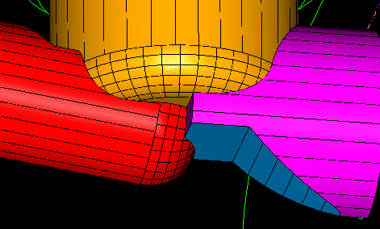
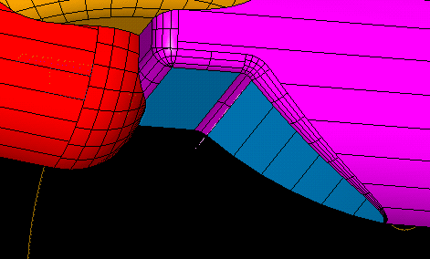
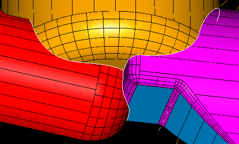
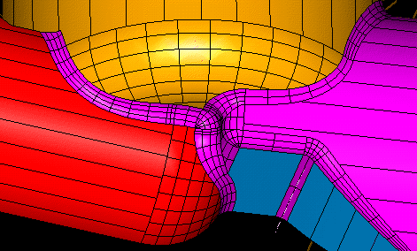

| Next Page | Previous Page | First Page |

Fillet edge R 10mm
"Complex filleting and rounding operations using the same tool."


Fillet 5 edges R 3mm


Fillet chain the edges R 3mm


Reflect the part.
Reflect, pick part, <Done>, pick back face as reflect plane, Keep Both
"Need to add some non-symmetrical features, hence the reflection."